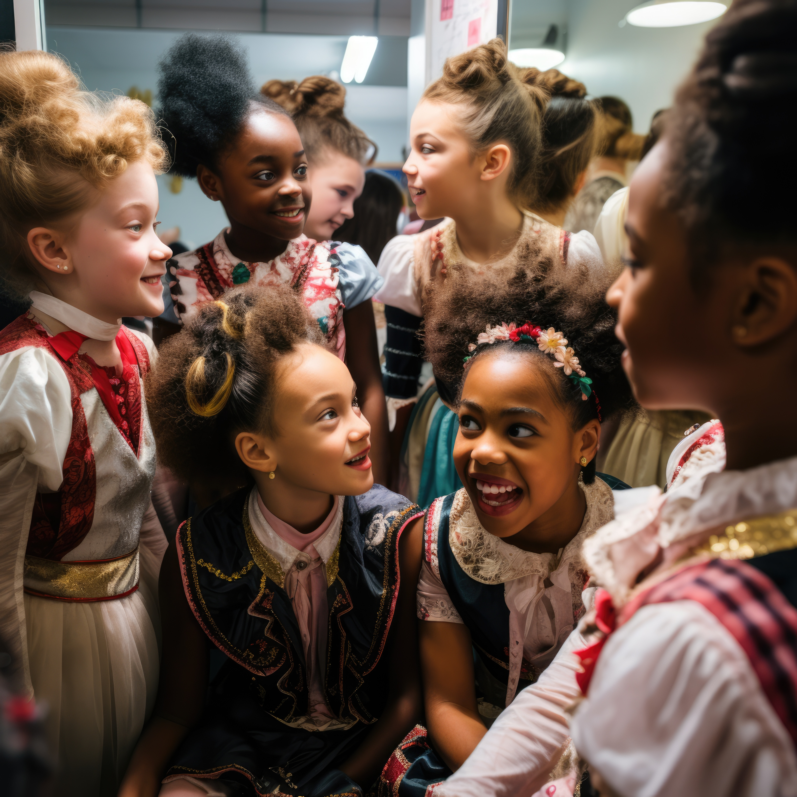

Children in the class during a learning period.
Life Restoration Day Care offers a robust English-medium curriculum specifically designed to bridge the gap in Early Childhood Development (ECD). Our program focuses on linguistic excellence, ensuring that every child is prepared for the transition to primary school with confidence and a high level of communication skills.
Children in the class during a learning period.

children during leisure time

Children doing painting lessons during their classes.

Children doing assembly, singing the national anthem.

In a globalized world, English proficiency is a vital tool. We immerse our students in an English-speaking environment from day one, focusing on phonics, vocabulary building, and social expression.
We understand the challenges faced by working parents. Our after-school support provides primary school students with a safe, supervised, and quiet environment to complete their homework with professional guidance.
We engage our students in various activities to promote holistic growth:
A structured day ensures consistency and helps children feel secure in their environment.
| Time | Activity |
|---|---|
| 07:00 – 08:30 | Arrival and Free Play |
| 08:30 – 09:00 | Morning Prayer and Assembly |
| 09:00 – 10:30 | Core English Lesson (Phonics/Reading) |
| 10:30 – 11:00 | Healthy Snack Break |
| 11:00 – 12:30 | Creative Arts and Numeracy |
| 12:30 – 13:30 | Lunch Time |
| 13:30 – 15:00 | Nap Time / Quiet Rest |
| 15:00 – 17:00 | After-School Support & Departure |